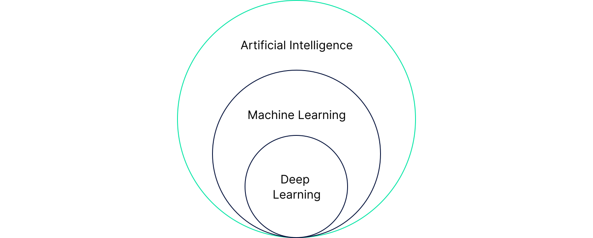
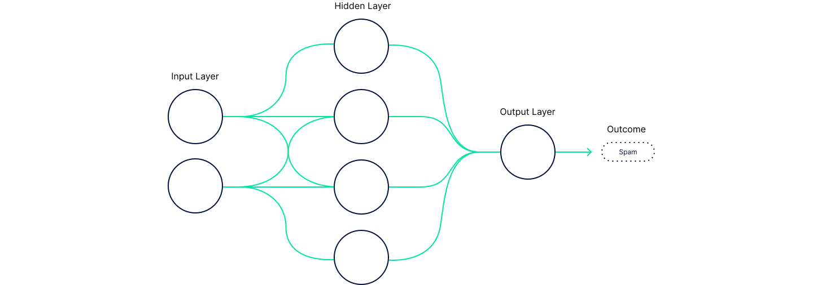

AI demystified: A C-suite guide to leveraging artificial intelligence

25th of September, 2023
To unlock its revenue-generating potential, you have to understand what is meant by “AI”

Embark on a journey through the layers of AI — artificial intelligence, machine learning and deep learning — all the way to generative AI. Gain strategic insights to elevate your organisation's revenue through informed AI adoption.
AI projects deliver a 13% return on investment (ROI) for “best-in-class companies” leveraging the technology. That's over twice the ROI of 5.9% “average” businesses get from artificial intelligence (AI). To gain maximum value from AI investment, a deeper understanding of what "AI" encompasses is required.

Artificial intelligence and machine learning
The outer ring of Figure 1 represents the entirety of AI, which encompasses both technical and non-technical aspects, from logic and reasoning to social good and safety.
Inside that is machine learning (ML). Otherwise known as statistical learning or statistical machine learning, it is a field that studies methods that let machines leverage data to improve computer performance on some specific set of tasks.
Machine learning is traditionally divided into three categories:
-
Supervised learning: A set of training data is created with example inputs, called a feature vector, and known outcomes (labels). For example, you likely receive a bunch of emails that you don’t want. They’re moved to a spam folder for you by whomever your provider is. They do this by creating a set of features that reliably identify emails from your co-workers or friends as legit emails (known as ‘ham’) vs those for winning a microwave (known as ‘spam’). Using a set of known outcomes with associated data, it’s possible to create an algorithm that can classify every email as spam or ham with a certain probability.
-
Unsupervised learning: A set of training data is provided; however, there’s no explicit mapping of input to outcome. Instead, the goal is to discover patterns within data. Let's pretend you’re a product owner for an online retailer, you want to understand how to best market to your customers, to create segments. To do this you can use an algorithm, like K-Means, to group users that have similar attributes.
-
Reinforcement learning: The program interacts within a dynamic environment and has to fulfil specific goals e.g. reach the end of a maze or win a game. As the environment changes the algorithm is provided with rewards for making the ‘right’ choices, the algorithm is incentivised to maximise these rewards.
To understand the innermost circle of Figure 1, deep learning (and generative AI), we’ll first explore neural networks.
Neural networks
Neural networks (NN) were inspired by biological entities called neurons but they don’t resemble what you may recall from school science textbooks. Instead, they are comprised of three components:
-
Nodes: There are three flavours of node: input, hidden and output. Nodes are collected into layers which receive an input, apply a function and output a new value.
-
The input layer receives input into the network. It’s the public interface of a NN, think of it like your microservices APIs.
-
The hidden layer, of which there can be many, takes the input from the previous layer and applies a function. These are the layers that learn what is what. For example, if you want to detect red buses you may create something that can discriminate on colour, size and shape. To detect a big red bus the network will need all of the functions to ‘fire’ when presented with an image of a bus and hopefully none if presented with something else.
-
The output layer is the final component, it’s responsible for handling the outcome of the model e.g. the vehicle in the picture is a big red bus.
-
Weights: The proportionate contribution of each node input in achieving the output — e.g. ‘frequency of activity’ may have higher weight than ‘duration of activity’ in determining whether an online retail transaction is fraudulent.
-
Biases: Distortion of the contribution of an input in determining the output. It allows control over the output of the neuron, shifting to accommodate the fit of data.
These components are summarised in Figure 2. It depicts what’s known as a feedforward NN, which has three layers: input; hidden; output.

When starting with a problem, we are tasked with creating a structure for the network and transforming the data in some way to feed it to the network. Each layer within the network is then responsible for performing further transformations on the data and minimising the difference between the known outcome and the prediction. The process of making the network understand a problem is called training.
Training allows us to iteratively adjust the internals of the network forming probability-weighted associations of input and result. The internals being the weights and bias mentioned above; weights control the importance of each feature in predicting the result, while the bias is used to modify the activation function in each of the neurons.
Training a neural net can be simplified into 4 steps:
-
Forward propagation: Feed in data and get a prediction.
-
Loss calculation: Compare the difference between the prediction and the expected outcome.
-
Backpropagation: Move right to left through the network and update the weights and biases using an algorithm like gradient descent.
-
Repeat: Repeat the process a number of times. Each iteration is called an epoch and you keep doing this until you reach a set number of epochs or the loss calculation ceases to improve on the training data.
When finished, you typically show fresh data (data it hasn’t seen before) to the network, calculate the difference between the predictions and the outcomes and produce a final metric that describes the performance of the network e.g. precision, recall or F1 score.
Deep learning
Typical neural networks (NNs) have one or two hidden layers. A deep neural network (DNN), on the other hand, can exceed hundreds of hidden layers, with each layer performing a transformation on its input much as in the shallow NN. Deep is simply a reference to the number of layers.
What sets deep learning apart from traditional machine learning approaches, including shallow NNs, is that they do not require the same sort of human intervention, such as feature engineering, to the extent we have done in the past with ML. DNNs can consume and process unstructured data like images and text and automatically generate features. Backpropagation can then be used to adjust parameters to increase the accuracy of the output.
DNNs can process vast amounts of data, which means they require a vast amount of computing power, natural resources (electricity, cooling etc) and hence capital investment too.
Artificial general intelligence
We'll begin with a couple of definitions of artificial general intelligence (AGI):
“Highly autonomous systems that outperform humans at most economically valuable work.” ‘OpenAI Charter’
“Capable of solving almost all tasks that humans can solve.” ‘The limits of machine intelligence’
There is currently no such thing as AGI; it remains the stuff of science fiction, but very much the target of AI research and companies like DeepMind and OpenAI.
“First solve AI, then use AI to solve everything else”, a paraphrase of “solve intelligence, and then use that to solve everything else”
D. Hassabis
CEO of Google DeepMind
Generative AI
According to Google AI:
“Generative AI builds on existing technologies, like large language models (LLMs) which are trained on large amounts of text and learn to predict the next word in a sentence. For example, "peanut butter and ___" is more likely to be followed by "jelly" than "shoelace". Generative AI can not only create new text, but also images, videos, or audio.”
This kind of AI does not fit the definition of AGI, in that it is neither autonomous nor capable of learning to accomplish any intellectual task — at least not of its own accord.
Transformer architecture
In a paper entitled ‘Attention Is All You Need’, researchers from Google Brain/Research introduced the Transformer architecture. Their new approach embraced self-attention mechanisms to manage global dependencies between inputs and outputs; this enabled them to eliminate the need for recurrence and convolution.
This meant data could be processed in parallel, making processing faster. Faster processing meant quicker iteration and lower cost — a win, regardless of performance gains. However, there was a performance gain too because transformers were better able to generalise.
Like much of AI, attention is designed to be a facsimile of a human trait — cognitive attention. It's a capability to regulate the importance of specific parts of the input data, in human terms, it enables an LLM to ‘understand’ the context of a word and how that word relates to other words in a sentence.
OpenAI builds more performant models
OpenAI was founded in 2015 and its mission is to “ensure that artificial general intelligence — AI systems that are generally smarter than humans — benefits all of humanity.” By 2020, it had shown that combining vast swathes of data with the transformer architecture could lead to increasingly more performant models capable of translation, question-answering and coherent text generation. Add in a training mechanism that includes keeping humans in the loop, so-called Reinforcement Learning on Human Feedback (RLHF), and performance could be even further enhanced.
By late 2022, OpenAI had built models that could create art from text and perform speech recognition.
The hottest new programming language is English
One of the biggest problems with ML had been leveraging it effectively. ML is hard to use, hard to explain and certainly doesn’t come with a simple, usable UI. Tech aside, one of the most impressive things OpenAI did was to turn its models into a consumer product. One that was so simple to use, and so easy to see value from. Anyone with a computer could now interact with artificial intelligence with just a few words — no programming required. All you needed was a prompt; all you needed was some English.
At the same time, skilled programmers, or ambitious enterprises with access to such talent, can now leverage the power of LLMs to derive enduring business value from their data assets in ways previously intractable and at a speed previously unthought of.
The process can be as simple as leveraging APIs provided by various service providers — which can be done in existing as well as greenfield projects. Granting access to your internal knowledge bases and configuring models to consume from them, creating your own fine-tuned model or using Retrieval Augmented Generation (RAG) with the domain-specific data you have.
For the truly adventurous, there’s the option to build your own model. You can either do this all on your own, assuming you have access to sufficient expertise, compute resources and deep pockets, or use a platform like MosaicML — this is the most risky and expensive route to take, but may well provide the most value, sustained business impact and security going forward.
Let's not forget, while you’re building these new systems you can also leverage an array of generative AI tools to help you build them faster; it really is generative AI all the way down!
Of course, there’s some hyperbole here. As with any architectural choice, there is no right answer, only a series of compromises — you will have to make hard decisions around budgets, security, data integrity and vendor lock-in.
Ultimately, it’s an exciting time given the speed of both the technology’s development as well as consumer adoption. But we are still in the early days — generative AI is by no means the end goal for companies such as OpenAI, which remains artificial general intelligence.
Organisations increase their revenue by adopting AI
McKinsey & Company’s ‘The state of AI in 2023: Generative AI’s breakout year’ survey of C-suite executives highlights the revenue gains your organisation could achieve by adopting AI. 6% of respondents state they’ve seen an increase of over 10%, while 18% reveal their revenue has risen by 6-10% since they began leveraging AI. By taking an informed approach, your organisation can get a “best-in-class” return on its investment in AI.
You may also like